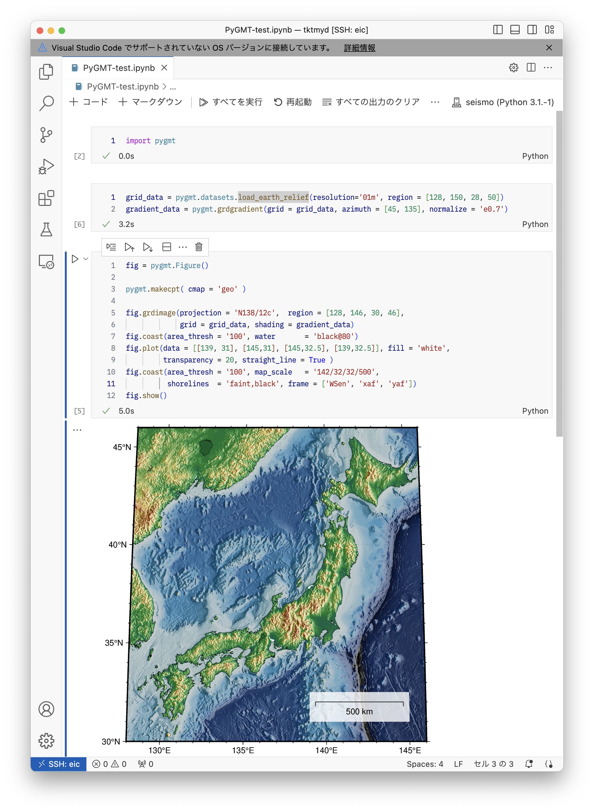

解析環境の構築
ここではPythonの仮想環境基盤としてMiniforgeを導入し，その中でNumPyやPyGMTを含めた仮想環境を作成します．
ここで紹介する環境はいわゆる Anaconda として知られているPythonのパッケージ管理環境です． 研究環境でも広く使われていましたが，2024年のライセンス改訂によって，研究教育目的であっても無料で利用することが困難になりました．
そこで，その代替としてMiniforgeを用います．MiniforgeはAnacondaのパッケージ管理コマンド conda と同等なものを提供する完全なオープンソースなプロジェクトです．
Miniforgeのインストール
まずは適当なディレクトリでMiniforgeを curl コマンドでダウンロードします．
$ curl -L -O "https://github.com/conda-forge/miniforge/releases/latest/download/Miniforge3-$(uname)-$(uname -m).sh"そのディレクトリでダウンロードしたスクリプトを bash で実行します．
$ bash ./Miniforge3-Linux-x86_64.shすると，対話的なインストーラが立ち上がります．
Welcome to Miniforge3 24.3.0-0
In order to continue the installation process, please review the license
agreement.
Please, press ENTER to continue
>>> Enterで続けると，END USER LICENSE AGREEMENT が表示されます．スペースキーを何度か押して最下部までスクロールすると（読むと），
Do you accept the license terms? [yes|no]
>>> と訊かれますから，yes と入力します．
続けて訊かれるのはインストールする場所です．
Miniconda3 will now be installed into this location:
/home/(username)/miniforgea3
- Press ENTER to confirm the location
- Press CTRL-C to abort the installation
- Or specify a different location below
[/home/(username)/miniforge3] >>> デフォルトだと，上記にあるように自分のホームディレクトリ（/home/(username)）の下に miniforge3 が作られます． 特に問題ければこのままEnterします．場所を変えたい場合は，適当な場所を指定してください．
Miniforgeのインストール先として /work/(username)/ 以下は非推奨です．頻繁に更新するファイルではないため，すぐに自動削除されてしまいます．
このあとしばらくインストール処理が走ります．
Installing base environment...
Downloading and Extracting Packages:
Preparing transaction: done
Executing transaction: done
installation finished.
Do you wish to update your shell profile to automatically initialize conda?
This will activate conda on startup and change the command prompt when activated.
If you'd prefer that conda's base environment not be activated on startup,
run the following command when conda is activated:
conda config --set auto_activate_base false
You can undo this by running `conda init --reverse $SHELL`? [yes|no]
[no] >>> 最後に訊かれるのは，ログイン時に自動的にcondaが使えるようにするかどうかという質問です． デフォルトは no になっていますが， yes を推奨します．
yes にすると，ホームディレクトリ直下の設定ファイル .bashrc に以下の内容が書き込まれます（user tktmydの場合）．
# >>> conda initialize >>>
# !! Contents within this block are managed by 'conda init' !!
__conda_setup="$('/home/tktmyd/miniforge3/bin/conda' 'shell.bash' 'hook' 2> /dev/null)"
if [ $? -eq 0 ]; then
eval "$__conda_setup"
else
if [ -f "/home/tktmyd/miniforge3/etc/profile.d/conda.sh" ]; then
. "/home/tktmyd/miniforge3/etc/profile.d/conda.sh"
else
export PATH="/home/tktmyd/miniforge3/bin:$PATH"
fi
fi
unset __conda_setup
if [ -f "/home/tktmyd/miniforge3/etc/profile.d/mamba.sh" ]; then
. "/home/tktmyd/miniforge3/etc/profile.d/mamba.sh"
fi
# <<< conda initialize <<<もしインストールの最終段階で no を選んでしまった場合，この内容を（ユーザー名を自分のものに書き換えたうえで）ホームディレクトリ直下の .bashrc ファイルに追記（ファイルがなければ作る）しておきます．
これでminiforgeのインストールは終了です．
EICでは，上記の設定をしても，ターミナルからログインしたときに自動で conda が有効にはなりません．VSCode経由でのSSH接続では有効化されるようです．
もし，ターミナルから conda を有効にしたいときには，
$ source ~/.bashrcというコマンドで， .bashrc ファイルの設定を読み込ませてください．あるいは，~/.bash_profile というファイル（なければ作る）に上記 source コマンドを記述しておくと，ログイン時に直接 conda が使えるようになります．
Conda仮想環境の作成
Miniforgeが有効になっていると，EICのプロンプトが
(base) -bash-4.2$ のように (base) とついたものに変更されているはずです． これはcondaの環境名で，初期状態 base が有効になっているという印です．
この状態では，システムに入っているPythonよりも，Miniforgeで自分がインストールしたPythonのほうが優先されます．たとえば，python コマンドの場所を調べてみると，
$ which python
~/miniforge3/bin/pythonと表示され，自分のホームディレクトリ以下，Miniforgeをインストールしたディレクトリの下にpython本体が入っていること，それがシステムのpythonよりも優先されていることがわかります．
Miniforgeでは，Python本体と関連ライブラリを丸ごとまとめた 仮想環境をいくつも作り，必要に応じて切り替えて使うことができます．ここでは，地震波の解析に必要なライブラリを入れた仮想環境 seismo24 を作成してみます．
$ conda create --name seismo24 --channel conda-forge \
python ipykernel pygmt gmt numpy scipy obspy netcdf4 \
matplotlib cartopy ffmpeg画面の幅の都合上複数行に分かれていますが，これで1つのコマンドです．
Linuxのターミナルでは，行末にバックスラッシュ \ を打つことで，1つのコマンドを複数行に分割できます．
ここで，1行目はおもにオプション，2行目以降がインストールしたいパッケージ（ライブラリ）名です．指定したオプションの意味は以下のとおりです．
--name seismo24仮想環境の名前をseismo24に指定します．--channel conda-forgeパッケージの検索・インストールをする提供元を指定します．conda-forgeには非商用のパッケージがたくさん集まっており，常にここを指定しておけば間違いありません．
まずパッケージなしで conda create により環境だけつくり，ひとつひとつのパッケージを後から追加していくこともできます．Web上の解説ではそのようなやり方が多く見られるようです．
しかし，そのやり方ではバージョンの競合の問題が発生しやすいようです． 必要なパッケージをまとめて指定しておくことで，全パッケージが動作するよう，自動的にバージョンが調整されます．
conda create を実行すると，指定したよりも遥かに多いパッケージが表示され（依存関係の問題です）
Proceed ([y]/n)? と訊かれますので，y を入力します．すると，しばらく端末上にインストールの経過が表示されます．インストールには多少の時間がかかります．数分待つと，
Preparing transaction: done
Verifying transaction: done
Executing transaction: done
#
# To activate this environment, use
#
# $ conda activate seismo24
#
# To deactivate an active environment, use
#
# $ conda deactivateと表示され，インストール完了です．このメッセージの通り，condaが有効になった状態で，
(base) -bash-4.2$ conda activate seismo24 # seismo24環境を有効化
(seismo24) -bash-4.2$ conda deactivate # seismo24環境を無効化
(base) -bash-4.2$ conda deactivate # conda自体を無効化
-bash-4.2$というように，conda activate と conda deactivate で有効，無効を切り替えられます． さらに base 環境で conda deactivate すると，conda 自体を無効化できます．
ともあれ，これで一通りのツールが使えるようになりました．
PyGMTやObsPyの初回インポートには多少の時間がかかりますが，初期化にともなうもののようです． VSCodeで接続した場合は，EICリモート環境にPython+Jupyterの拡張機能をインストールすれば，ipynbファイルの編集経由でインストールしたKernelを指定して利用できます．
ただし，EIC上ではPythonのバージョン表示が 3.1.-1 など不正になり（本当は 3.12.3），選択したPythonのバージョンがサポートされないという警告がでます．ですが，あまり気にしなくて大丈夫そうです．

上図は，VSCodeでEICに接続し，そこで上述の環境でJupyter Notebookを利用し，PyGMTにより地図を描画したものです．このような環境を整備しておくと，EIC上実施した数値シミュレーションの可視化や事後解析をEIC上でそのまま実施できて，便利になることでしょう．